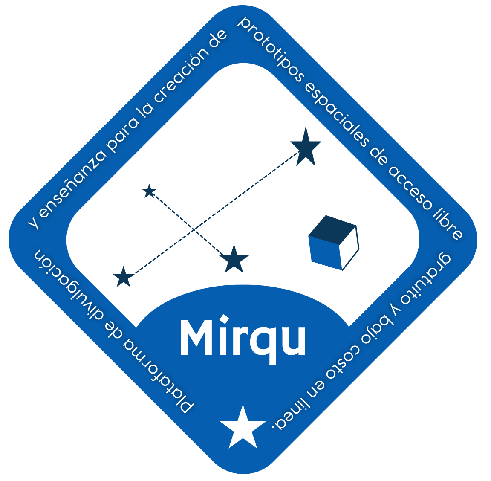

Proyecto Mirqu
El proyecto Mirqu tiene como objetivo reducir las barreras de entrada para la participación en actividades espaciales desde el ámbito académico,
promoviendo la formación de capacidades en ingeniería espacial a través del desarrollo de prototipos funcionales de CubeSat en tierra.
Este enfoque busca facilitar el aprendizaje práctico y teórico mediante la simulación de subsistemas
reales de un satélite tipo CubeSat, empleando componentes de bajo costo y tecnologías accesibles.
La propuesta está orientada a proporcionar una base comprensible, replicable y aplicable para estudiantes, docentes e investigadores que deseen
iniciarse en el diseño, construcción y operación de sistemas espaciales. Los prototipos desarrollados no solo representarán una herramienta
pedagógica valiosa, sino también un punto de partida sobre el cual futuras investigaciones puedan construir soluciones más avanzadas
o ser validadas en contextos más exigentes.
Cada subsistema del CubeSat (como energía, comunicación, control de misión y carga útil) será documentado detalladamente, con el fin de
que los procedimientos puedan ser reproducidos con facilidad y utilizados como guía en entornos educativos o de investigación.
El proyecto Mirqu no solo se orienta a la construcción de un prototipo funcional de CubeSat en tierra, sino también a proporcionar una
formación sólida y accesible en torno a los principales aspectos de la ingeniería espacial, especialmente en el ámbito de los CubeSats.
Esta iniciativa busca democratizar el conocimiento espacial, facilitando el acceso a contenidos técnicos mediante el uso de tecnologías
de bajo costo, con el objetivo de construir capacidades sostenibles desde el entorno académico.
Se espera que los participantes y usuarios del prototipo adquieran conocimientos fundamentales en:
- Introducción a los sistemas espaciales y los beneficios estratégicos del uso de tecnologías espaciales.
- Fundamentos de ingeniería aplicados al diseño y desarrollo de CubeSats, incluyendo capacidades y casos de uso reales.
- Gestión de proyectos para el ciclo completo de desarrollo de CubeSats.
- Ingeniería de confiabilidad en sistemas satelitales.
- Métodos de verificación, validación y pruebas aplicadas a sistemas espaciales.
- Uso de CubeSats como herramientas para el desarrollo de capacidades académicas y tecnológicas sostenibles.
- Fundamentos operativos y regulatorios en torno a la operación de satélites.
Los contenidos que sustentan esta formación están organizados en torno a los siguientes ejes temáticos:
- Exploración espacial mediante tecnologías de pequeñas naves espaciales.
- Arquitectura y operación de satélites tipo “Lean”, con foco en la interacción con el entorno espacial.
- Diseño de micro, nano y pico satélites; autonomía, guiado y control.
- Desarrollo de estaciones terrestres, estructuras desplegables y componentes eléctricos.
- Ingeniería de sistemas aplicada a naves espaciales pequeñas.
- Diseño, integración y operación de micro y nanosatélites.
- Arquitecturas innovadoras, incluyendo propulsión, cultivo de órbitas y materiales funcionales.
- Sostenibilidad de las actividades espaciales: monitoreo de desechos orbitales y conciencia situacional espacial.
Todo el contenido será presentado de manera clara, progresiva y comprensible, permitiendo que personas de diferentes disciplinas —no necesariamente
especializadas en aeroespacial— puedan comprender los fundamentos del desarrollo de pequeños satélites
y aplicarlos a sus propios proyectos o iniciativas académicas.
Colaboradores